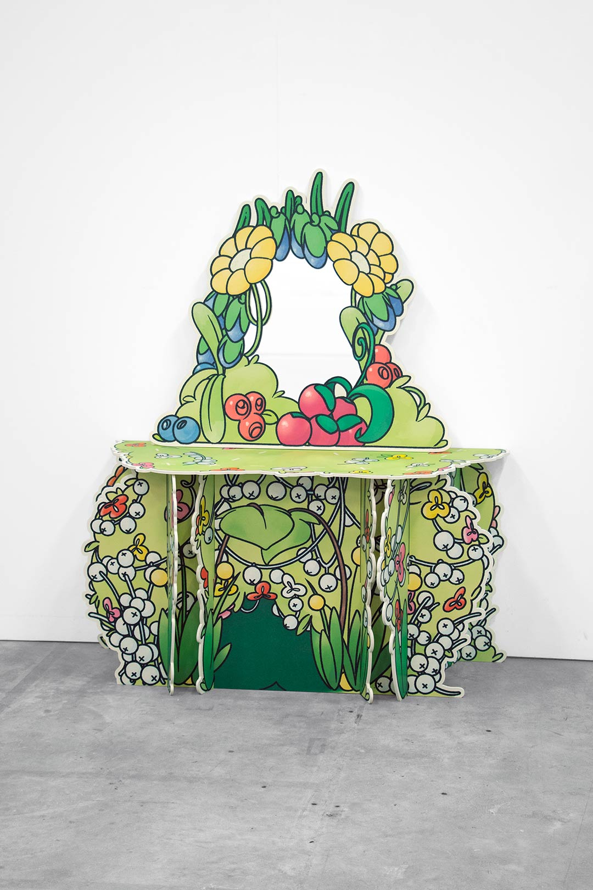
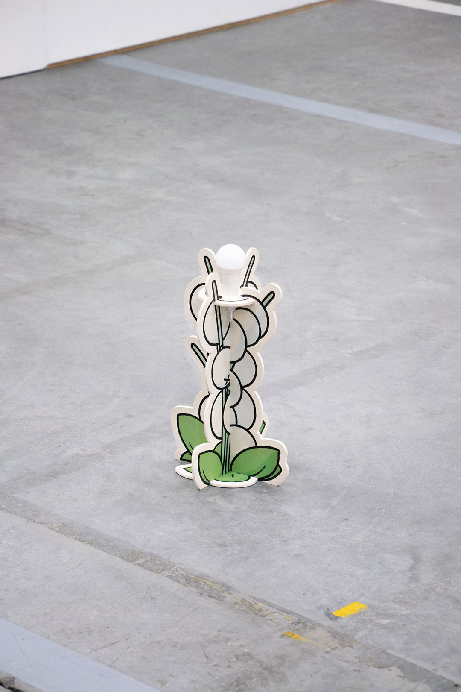
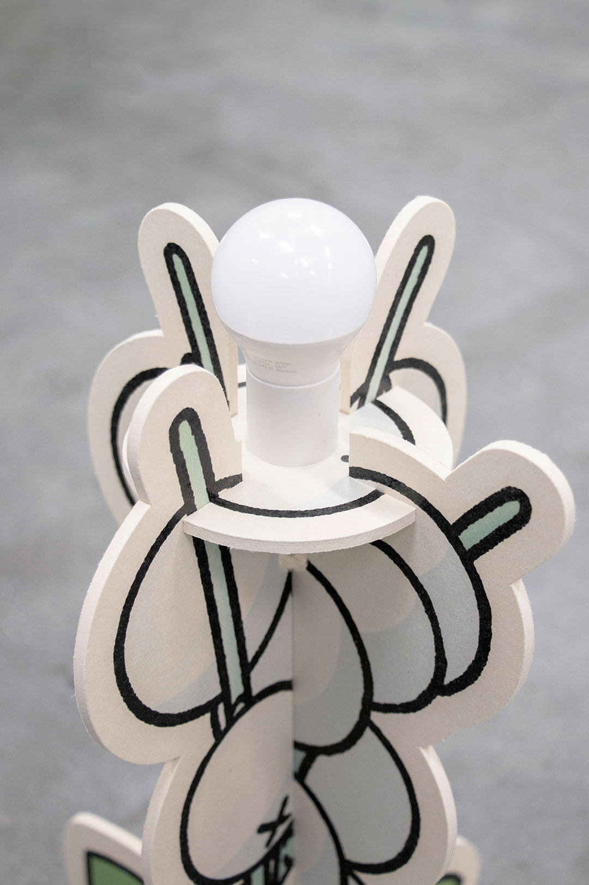
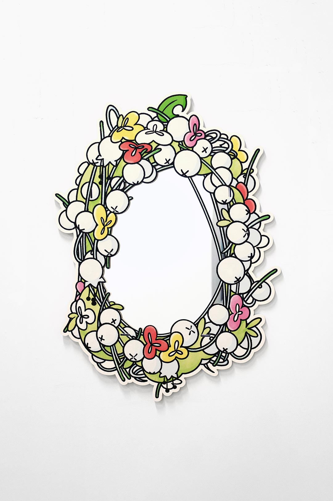
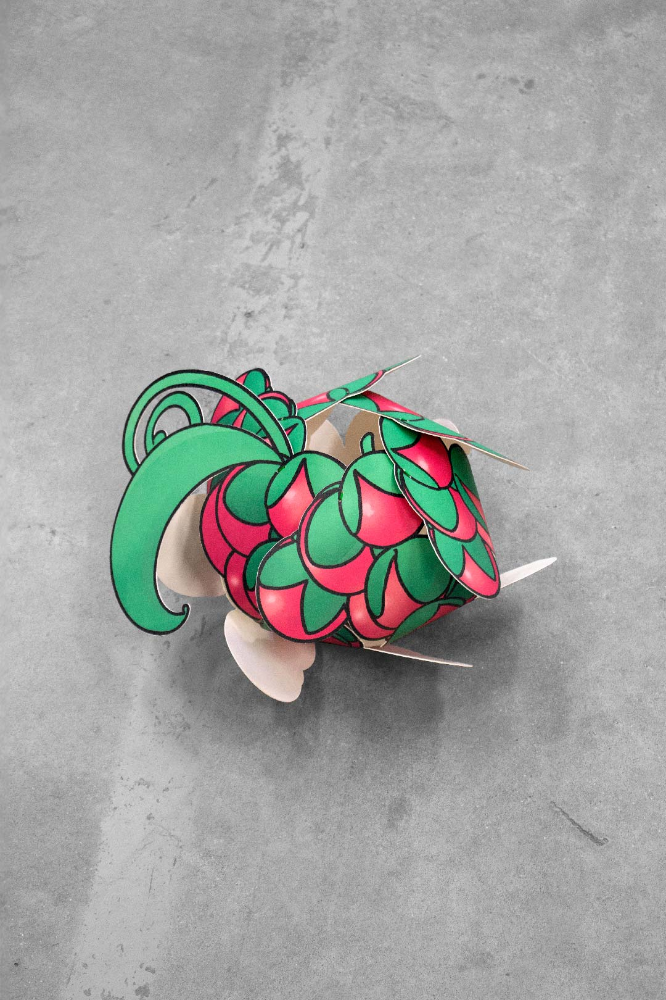

index | shop | info | contact | chaos
Berries and Flower Dressing Table, Berries Lamp and Berries Mirror, Berry Garden, are part of a series of objects designed and produced following an invitation by Peter van Ede↗, Canon Europe↗, and Kohlschein GmbH↗. The pieces were presented alongside the work of 13 other artists and designers in the 2023 exhibition Creative Playground, centered on material and print-based experimentation using the Canon↗ Arizona printer and Kohlschein GmbH↗’s recyclable material. They transform the ornate, flower-laden forms of Rococo furniture into whimsical oversized printed objects, cut out and assembled like the cardboard toys once found in children's magazines.
Berries and Flower Dressing Table, Berry Garden Canon Customer Experience Center↗ (Venlo, 2023) | Wood fiber boards, plotter cut, UV print | 158. 130. 61cm (1 available via shop)


Berries Lamp, Berry Garden Canon Customer Experience Center↗ (Venlo, 2023) | Wood fiber boards, plotter cut, UV print | 35. 22. 20cm (2 available via shop)



Berries Mirror, Berry Garden Canon Customer Experience Center↗ (Venlo, 2023) | Wood fiber boards, plotter cut, UV print | 108. 78. 01cm (1 available via shop)


Research, Berry Garden Canon Customer Experience Center↗ (Venlo, 2023) | Wood fiber boards, plotter cut, UV print | 27. 33. 32cm

*This website was last updated on July 1, 2026.